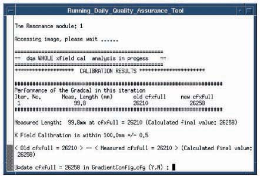

The system will start scanning. The sequence of events is prescan, then scan. The system will re scan if adjustments are necessary. Select Y to update GradientConfig.cfg. See Illustration 5.
Illustration 5: DQA Calibration Tool
